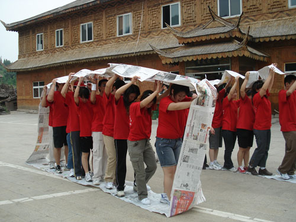
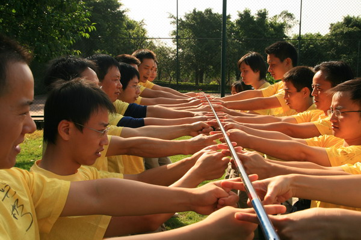

职业力团队熔炼――团队意志特训营
郑重提示：为保证良好的培训效果，切勿将此内容透露给培训学员！！
培训地点：
室内与室外结合培训，要求室内有充分的活动空间，须有白板、音响系统
培训对象：
企业各层级员工，40――80人
培训时间：
两天共14小时，客户可根据培训需要选择不同主题的培训项目，拆解成半天、一天等。
培训背景：
体验式培训（Experiential Training）是个过程，是个直接认知、欣然接受、尊重和运用当下被教导的知识及能力的过程。它是在虚拟环境中通过感悟提高认知，总结方法和经验；而体验式工作是把实际工作的得失通过双向循环沟通的方式，并利用头脑风暴等方法，来查找或总结工作中的绩效增长点或者能力提高点。培训的主要组成共分为体验、分享、交流、整合、应用五个既独立又统一的环节。
这种方式不仅可以大幅提高工作热情，提升团队的凝聚力和创造力，还可以提高个人和团队的工作绩效，变工作为游戏、学习，每天都是新的起点，每天都可以进步一点
体验式培训与传统室内灌输式培训，在培训方式上有很大的区别，在培训效果上也相去甚远！体验式培训的方式以学员高度的参与性为主要指导思想，以学员的感受、感悟为基础，带入课程最后学员所能接受的课程效果，特别在员工心态调整、企业文化导入、团队沟通协作等方面！
课程收益：
通过不同的团队活动现实员工行为的改变与突破，使员工的固有价值观和思维模式得到有效牵引，使之得到积极的完善，甚至是升华,激发他们寻求突破的生命动力，改善与人沟通的方式，增加相互的沟通与理解，拓宽思维领域，增加团队凝聚力与向心力。让学员学会自己去解决问题、考虑问题，学会理解与自我调节。
对于高层：你能够看到员工更真实的一面，发现员工平时不会表现出来的一些情感和潜力，从察言观色中印证你对下属的判断。
对于中层：你可以学到如何做好团队管理的方法，你可以借此增加与员工的接触，减少团队成员的距离感，鼓励表现优秀的员工，帮助不善表现的员工。
对于基层：这是一次充分展现自我和释放自我的机会，可以调节你的情绪，可以感悟很多道理，可以找到一些方法，可以改善一种关系，可以突破固有的心境。
课程环节：
一、建设篇
1、学员定向：明确学习目的
2、团队建设：组建团队、明确规则、建设团队文化

二、信任篇
1、AB搭档：打破交流的隔膜，建立信任的基础，学会接纳与关注他人。
2、风中劲草：感受个人与团队的关系，对团队力量的信任与个人力量的信任。
3、信任腾空躺：挑战自己，建立团队的信任，感受他人信任带给自己的力量，化信任为责任。


4、总结与分享
三、合作篇
1、心有千千结：训练系统思维，解决问题的能力和员工的主动意识。
2、同心杆：理解个人与团队的关系，充分感受个人在团队中的责任，个人对团队的影响力，同时锻炼团队成员的包容、理解，相互协调合作的能力，展现团队的凝聚力。
3、无敌风火轮：情境导入，使学员动手制作自己的风火轮，并且快速完成目标，体现团队的合作意识，分工与责任，同时要求成员对自己的工作成果负有全部责任，有节奏的完成项目。
4、疾速60秒：训练团队分工合作的意识，团队快速解决问题的能力，以及头脑风暴、创新意识。
5、总结与分享
四、责任篇
1、坐地起身：协调一致、共同承担责任，学会坚持，不断尝试。
2、心手相连：情境导入，使学员能够快速融合，快速建立彼此的信赖和支持，锻炼共同解决问题的能力，并且快速理解不同角色的作用，使新员工能够有效理解管理者的管理意图，增强同理心和服从意识。学会感恩，相互协作。
3、穿越雷区：学会耐得住寂寞，脚踏实地，听话、执行，懂得创新，寻找规律，明确不同角色所肩负的责任。
4、总结与分享
五、总结提高篇
1、生死速递：主动承担责任的意识，感受团队的力量，突破自我，自我激励，学会感恩。
2、总结与分享
客户见证图片：


许辰老师版权所有©2015